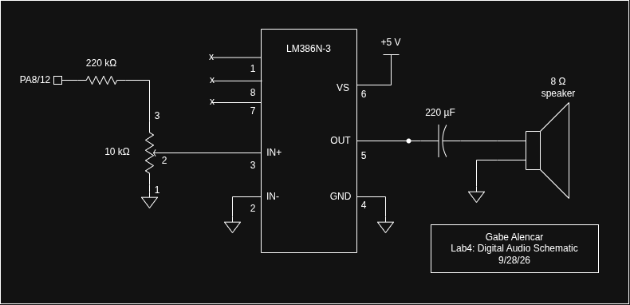

Lab 4: Digital Audio
Introduction
In this lab, the STM32L432KC microcontroller was programmed to play music on an 8 Ω speaker. The MCU reads a list of notes, each given as a pitch in Hz and a duration in ms, and produces a square wave at each pitch for the given duration. A pitch of 0 is a rest, and a duration of 0 marks the end of the song. The songs Für Elise and Happy Birthday are played.
The GPIO pin cannot drive a speaker directly, so the square wave passes through a resistor divider and a volume potentiometer into an LM386 audio amplifier, which drives the speaker. This was the first lab on the MCU. All peripheral access is done through my own #define base addresses and register structs, written from the RM0394 reference manual. The code was written in C in SEGGER Embedded Studio and downloaded to the board over the on-board J-Link.
Design and Testing Methodology
Timer Selection
- TIM1 makes the pitch. It runs in PWM mode 1 on channel 1 and drives PA8 directly through alternate function AF1.
- TIM2 times each note. It runs in one-pulse mode as a blocking delay, using the initTIM() / delay_millis().
Register-Level Drivers
- STM32L432KC_RCC.h/.c: RCC register struct at 0x40021000, the clock configuration tutorial’s field values and functions (enableHSI16(), selectSysclk(), setAHBPrescaler(), configurePLL()), and configureClock().
- STM32L432KC_GPIO.h/.c: GPIO register struct (GPIOA at 0x48000000), plus gpioEnable(), pinMode(), pinAltFunction(), and digitalWrite().
- STM32L432KC_TIM.h/.c: A timer register struct shared by TIM1, TIM2, TIM15 and TIM16 (TIM1 at 0x40012C00, TIM2 at 0x40000000), plus initPWM(), setPWMFreq(), initTIM(), and delay_millis().
- STM32L432KC.h: Top-level header with the clock frequency constants.
- main.c: The two scores and the playSong() loop.
Pitch Generation (TIM1)
initPWM() disables slave mode (SMCR = 0) and sets PSC = 15. It puts channel 1 in PWM mode 1 (OC1M = 0110) with CCR1 preload, then enables the channel output (CC1E) and the main output (MOE) and starts the counter. For each note, setPWMFreq() computes the period in ticks, rounded to the nearest integer, and writes ARR = N − 1 and CCR1 = N/2 for a 50 % duty cycle. It then forces an update event so the new pitch takes effect immediately. A rest writes CCR1 = 0, which holds the output low for the whole note.
Song Player
playSong() walks through a {pitch, duration} array until it reaches a duration of 0. For each entry it calls setPWMFreq() and then delay_millis().
Technical Documentation
The source code for this lab can be found in this GitHub repository.
Calculations
Pitch and timer configuration
TIM1 counts 0, 1, …, ARR and then wraps, so one period of the output is N = ARR + 1 ticks:
\[ f_{out} = \frac{f_{TIM}}{(PSC+1)(ARR+1)} = \frac{16\ \text{MHz}}{16\cdot N} = \frac{10^6\ \text{Hz}}{N} \]
The code picks the nearest integer, N = (1000000 + f/2) / f, then sets ARR = N − 1 and CCR1 = N/2 for a 50 % duty cycle.
Duration and timer configuration
TIM2 ticks every 1 µs. For a note of ms milliseconds the code writes ARR = 1000·ms − 1, forces an update (UG, which clears CNT to 0), and starts the counter. The counter runs 0 … ARR, so the overflow comes after ARR + 1 = 1000·ms ticks, which is exactly ms milliseconds. One-pulse mode stops the counter at that overflow, and URS = 1 makes sure only the real overflow sets UIF. The code then waits on UIF.
220 Hz and 1000 Hz within 1 %
TIM1 is clocked at \(f_{TIM} = 16\ \text{MHz}\) with \(PSC = 15\), so the counter clock is
\[ f_{CNT} = \frac{f_{TIM}}{PSC+1} = \frac{16\ \text{MHz}}{16} = 1\ \text{MHz} \]
The counter runs \(0 \dots ARR\) and wraps, so one output period is \(N = ARR + 1\) ticks:
\[ f_{out} = \frac{f_{TIM}}{(PSC+1)(ARR+1)} = \frac{10^6\ \text{Hz}}{N}, \qquad N = \text{round}\!\left(\frac{10^6}{f}\right), \qquad ARR = N-1, \qquad CCR1 = \frac{N}{2} \]
220 Hz:
\[ \frac{10^6}{220} = 4545.45 \;\Rightarrow\; N = 4545,\quad ARR = 4544,\quad CCR1 = 2272 \]
\[ f_{out} = \frac{10^6}{4545} = 220.022\ \text{Hz}, \qquad \text{error} = \frac{220.022 - 220}{220} = +0.010\,\% < 1\,\% \]
1000 Hz:
\[ \frac{10^6}{1000} = 1000 \;\Rightarrow\; N = 1000,\quad ARR = 999,\quad CCR1 = 500 \]
\[ f_{out} = \frac{10^6}{1000} = 1000.000\ \text{Hz}, \qquad \text{error} = 0\,\% < 1\,\% \]
Max/min duration
Minimum: delay_millis() takes a whole number of milliseconds, so the shortest note is 1 ms (\(ARR = 999\)). The hardware resolution is one tick, \(1/f_{CNT} = 1\ \mu\text{s}\).
Maximum: TIM2’s ARR is 32 bits:
\[ T_{max} = \frac{2^{32}}{f_{CNT}} = \frac{4\,294\,967\,296}{10^6\ \text{Hz}} \approx 4295\ \text{s} \approx 71.6\ \text{min}, \]
Max/min frequencies
Minimum: TIM1’s ARR is 16 bits, so \(N \le 2^{16} = 65\,536\):
\[ f_{min} = \frac{10^6}{65\,536} = 15.26\ \text{Hz} \]
Maximum: the error bound must satisfy a 1% error since N varies by at most 0.5 our calculation is
\[ \frac{0.5}{N} \le 0.01 \;\Rightarrow\; N \ge 50 \;\Rightarrow\; f_{max} = \frac{10^6}{50} = 20\ \text{kHz} \]
This covers the whole audible range. The absolute hardware limit is \(N = 2\) which corresponds to 500 kHz, but the accuracy is poor.
All notes in Für Elise
Every distinct pitch in the starter code computed with the formulas above can be found here Für Elise note calculations
The worst case is 0.030% error at 659 Hz, so every note in Für Elise is ok since 0.030% < 1%.
Is checking 220 Hz and 1000 Hz sufficient?
Not by itself. The error bound \(0.5/N \approx 0.5 f/10^6\) grows with frequency, so the worst case is set by the highest note played. Für Elise reaches 1319 Hz, which is above 1000 Hz. \[ \frac{0.5}{N} = \frac{0.5}{758} = 0.066\,\% \ \text{at 1319 Hz} \]
Schematic

Figure 1 shows the speaker circuit. The STM32L432KC and header are on the E155 development board and are not redrawn here. See the E155 development board schematic for how they are wired.
Results and Discussion
The design meets all of the specifications.The MCU plays Für Elise and Happy Birthday through an LM386 amplifier, with a potentiometer for volume. Every pitch is generated by hardware PWM on TIM1, and every note duration is timed by TIM2. All peripheral access goes through my own register-level drivers. I spent a total of 15 hours working on this lab.
AI Prototype Summary
For this lab’s AI prototype, I gave Gemini the prompt from the prototype page:
What timers should I use on the STM32L432KC to generate frequencies ranging from 220Hz to 1kHz? What’s the best choice of timer if I want to easily connect it to a GPIO pin? What formulae are relevant, and what registers need to be set to configure them properly?
The output was pretty high quality. It named the right timer families, gave the correct PWM frequency formula, and listed almost exactly the register sequence my final initPWM() uses: PSC, ARR, CCR1, OC1M = 0110, OC1PE, CC1E, ARPE, UG and CEN. It also flagged the BDTR.MOE bit that advanced timers need. Getting that list from RM0394 by hand means tons of saved time. The LLM was much faster at telling me what to search for.
That being said, it still had no context and didn’t know about any of the pins. It also assumed the default 4 MHz clock, while my design switches to HSI16 at 16 MHz, so its example ARR values did not apply. Compared with the earlier HDL-generation prototypes, the LLM works better as a documentation search tool. Its answers are easy to check against the manual. Generated HDL, on the other hand, can look right and hide issues.